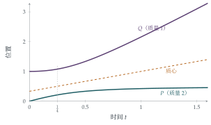

STEP III 2004，第 11 题
继续之前，请先阅读题目（原题为英文）。题目载于 STEP Support Programme 的题目资料库： step.maths.org/questions/04-s3-q11
引子
两个物体互相吸引或排斥：地球与月球、两颗恒星、一个质子与一个电子。每个物体的运动都取决于另一个物体的位置，因此两条方程是耦合（coupled）的，看来非要同时求出两个运动不可。牛顿（Newton）的重大简化在于更换变量：不用两个位置，而改用质心（centre of mass）和间距（separation）。质心的运动仿佛完全不受力，而间距的运动则像一个质量经过修正的单一质点。一个难题就此化为两个易题。
本题就两个在直线上运动的质点，实际做一次这样的分离。过程中还有一个小小的奇迹：间距原来是 \(t\) 的二次式的平方根，而个中原因与题目本身的设置毫无关系，却完全源于平面上的运动。
动笔之前
写出每个质点的牛顿第二定律（Newton’s second law）。每个力朝哪个方向作用？
这个力是排斥力，所以它把（左边的）\(P\) 推向左，把（右边的）\(Q\) 推向右： \[2\ddot x_1 = -\frac{2}{z^3}, \qquad 1 \cdot \ddot x_2 = +\frac{2}{z^3}.\] 这两条方程是耦合的，因为每一条都含有 \(z = x_2 - x_1\)。
逐步解题
阶段 1 间距
两条方程的哪一个组合只含有 \(z\)？
相减：\(\ddot z = \ddot x_2 - \ddot x_1 = \frac{2}{z^3} + \frac{1}{z^3} = \frac{3}{z^3}\)。■
间距的表现就像一个质量为 \(\frac23\) 的单一质点，受力 \(\frac{2}{z^3}\) 推动。\(\frac23 = \frac{2 \times 1}{2 + 1}\) 这个数就是约化质量（reduced mass）\(\frac{m_1m_2}{m_1 + m_2}\)。
阶段 2 间距的能量
利用 \(\ddot z = v\frac{\mathrm{d}v}{\mathrm{d}z}\)，分离变量然后积分。\(z\) 和 \(v = \dot z\) 的初始值是多少？
由 \(v\frac{\mathrm{d}v}{\mathrm{d}z} = \frac{3}{z^3}\)，积分得 \(\frac12v^2 = -\frac{3}{2z^2} + C\)。起初 \(z = 1\) 而 \(\dot z = \dot x_2 - \dot x_1 = 0 - 1 = -1\)，所以 \(\frac12 = -\frac32 + C\)，得 \(C = 2\)： \[v^2 = 4 - \frac{3}{z^2}.\] （这就是间距的能量守恒（conservation of energy）：以每单位约化质量计，动能加上势能 \(\frac{3}{2z^2}\) 是常数。）
阶段 3 出奇简单的解
要证明的答案是 \(z^2 = 4t^2 - 2t + 1\)。所以不妨考虑 \(w = z^2\)，而不是 \(z\)。以 \(w\) 表示，\(\dot w^2\) 是甚么？
设 \(w = z^2\)，则 \(\dot w = 2z\dot z\)，所以 \[\dot w^2 = 4z^2\dot z^2 = 4z^2\Bigl(4 - \frac{3}{z^2}\Bigr) = 16w - 12.\] 求导得 \(2\dot w\ddot w = 16\dot w\)，所以（只要 \(\dot w \neq 0\)）\(\ddot w = 8\)。因此 \(w\) 是 \(t\) 的二次式：\(w = 4t^2 + \alpha t + \beta\)。起初 \(w = 1\) 而 \(\dot w = 2z\dot z = -2\)，所以 \(\beta = 1\) 及 \(\alpha = -2\)： \[z = \sqrt{4t^2 - 2t + 1}. \qed\] （你可以直接验证：\(\dot w^2 = (8t - 2)^2 = 64t^2 - 32t + 4 = 16(4t^2 - 2t + 1) - 12\)。）两个质点在 \(t = \frac14\) 时最接近，此时 \(z = \frac{\sqrt3}{2}\)，其后便永远愈离愈远。
阶段 4 质心
\(2x_1 + x_2\) 满足甚么方程？为甚么它是最自然要考虑的组合？
把两条运动方程相加，\(2\ddot x_1 + \ddot x_2 = -\frac{2}{z^3} + \frac{2}{z^3} = 0\)。两个力大小相等、方向相反（牛顿第三定律），所以总动量（momentum）\(2\dot x_1 + \dot x_2\) 是常数。它的初始值是 \(2 \times 1 + 0 = 2\)，而 \(2x_1 + x_2\) 的初始值是 \(1\)，所以 \[2x_1 + x_2 = 1 + 2t.\] 质心位于 \(\frac{2x_1 + x_2}{3}\)，以速率 \(\frac23\) 匀速移动。再结合 \(x_2 - x_1 = z\)， \[x_1 = \frac{1 + 2t - \sqrt{4t^2 - 2t + 1}}{3}, \qquad x_2 = \frac{1 + 2t + 2\sqrt{4t^2 - 2t + 1}}{3}. \qed\]

回顾
更换变量以解除耦合。两条方程之差只含有 \(z\)；加权之和只涉及质心。
能量积分。写成 \(\ddot z = v\frac{\mathrm{d}v}{\mathrm{d}z}\)，便把二阶方程化为一阶方程：这就是能量守恒。
更换未知量。\(z\) 的方程不好处理；\(z^2\) 的方程却简单不过。
背后的数学
为甚么 \(z^2\) 是二次式
对任何形如 \(\ddot z = k/z^3\) 的力律，同样的计算都给出 \(\frac{\mathrm{d}^2}{\mathrm{d}t^2}(z^2) = 2\dot z^2 + 2z\ddot z = 2\dot z^2 + \frac{2k}{z^2} =\) 常数，因为 \(\frac12\dot z^2 + \frac{k}{2z^2}\) 正是守恒的能量。所以 \(z^2\) 必定是 \(t\) 的二次式。为甚么？
隐藏的原因是这样的。设想一个质点在平面上自由运动，即沿直线以恒定速率前进。它与原点的距离 \(r\) 满足 \(r^2 = (\text{一个二次式，变量为 } t)\)，因为 \(r^2 = (x_0 + at)^2 + (y_0 + bt)^2\)。而在极坐标（polar coordinates）中，它的径向运动方程是 \(\ddot r - r\dot\theta^2 = 0\)；由于角动量（angular momentum）\(h = r^2\dot\theta\) 是常数，方程变成 \[\ddot r = \frac{h^2}{r^3}.\] 立方反比的排斥力，正正就是隐藏的角向运动所产生的离心（centrifugal）效应。在我们的问题中，\(z^2 = 4t^2 - 2t + 1 = (2t - \frac12)^2 + \frac34\) 是某一点与原点距离的平方，该点以速率 \(2\) 沿一条直线运动，而这条直线与原点的距离为 \(\frac{\sqrt3}{2}\)。一维上互相排斥的两个质点，就是二维自由运动的影子。
二体问题
只要两个物体之间的力仅取决于它们的间距，并沿两者的连线作用，本题的方法便适用，一维如是，三维亦如是。质心作匀速运动，而间距向量 \(\mathbf{r}\) 服从 \(\mu\ddot{\mathbf{r}} = \mathbf{F}(\mathbf{r})\)，其中 \(\mu = \frac{m_1m_2}{m_1 + m_2}\)。对引力而言，这就是开普勒问题（Kepler problem），由牛顿在《自然哲学的数学原理》（Principia）中解决：间距描出的轨迹是椭圆、抛物线或双曲线。地球和太阳都绕着它们的共同质心运行，而这个质心位于太阳内部；地球和月球则绕着距离地心约 \(4700\) km 的一点运行，这一点在地球内部，但离地心颇远，所以地球每月都会摆动一次。天文学家正是靠侦测恒星的这种摆动，来寻找环绕其他恒星的行星。
1969 年，Francesco Calogero 研究直线上多个质点以平方反比势（即立方反比力）互相排斥的情况，发现无论质点数目多少，这个系统竟然都可以精确求解。Jürgen Moser 在 1975 年解释了个中原因，他用上一个矩阵，其特征值（eigenvalues）在矩阵随时间演化时保持不变：这就是 第 7.7 节 的 Lax 对（Lax pairs）。Calogero–Moser 系统如今是可积系统（integrable system）的核心例子，所谓可积系统，就是守恒量多得足以完全求解的系统；它把力学与随机矩阵、量子场论及孤立子理论联系起来。
思维技巧
当两个量互相耦合时，找出不耦合的组合。和与差，配上适当的常数作加权，往往能把问题拆成互相独立的部分。
质心坐标与相对坐标是第一个例子。到了大学，同一个想法会以矩阵对角化（简正模态（normal modes），第 11.2 节）、偏微分方程的分离变量法等形式出现，也见于量子力学。
延伸练习
绳上的两个质量。试做 STEP III 2023，第 9 题 （载于 OCR 提供下载的 2023 年试卷 zip 文件内）。题目考察以绳相连的两个质点，并利用质心把运动分离。留意其中一个质点何时向后移动。
吸引力。把力改为吸引力 \(\frac{2}{z^3}\)，重做本题。证明 \(z^2\) 仍然是 \(t\) 的二次式，并求两个质点何时相撞。
隐藏的平面。就题目中的运动，求出平面上与原点距离为 \(z(t)\) 的那条直线运动轨迹，以及扫过的角 \(\theta(t)\)。验证 \(z^2\dot\theta\) 是常数，且 \((z^2\dot\theta)^2 = 3\)。
开普勒第三定律。两颗质量分别为 \(m_1\) 和 \(m_2\) 的恒星相距 \(a\)，在引力作用下绕它们的质心作圆周运动。证明周期 \(T\) 满足 \(T^2 = \frac{4\pi^2a^3}{G(m_1 + m_2)}\)。
延伸阅读
John Taylor, Classical Mechanics（University Science Books），第 8 章。二体问题、约化质量与轨道。
Daniel Kleppner & Robert Kolenkow, An Introduction to Mechanics（Cambridge University Press），第 10 章，论有心力。
Francesco Calogero, Classical Many-Body Problems Amenable to Exact Treatments（Springer）。给有志挑战的读者：精确可解系统的世界。